Carnicería de oficio · Est. en el barrio
Cortes seleccionados y preparados con oficio.
La calidad se nota desde el primer momento. Vacuno, cerdo, pollo y embutidos, cortados a mano y a tu medida.
- Cortes
- 27
- Familias
- 4
- Corte
- A mano
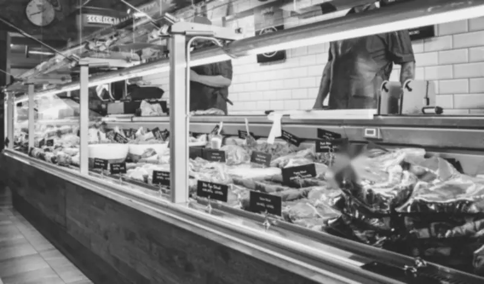
Nuestra esencia
El arte de la carne, como antes.
En Santa Carne elegimos cada pieza con criterio y cuidamos la frescura de punta a punta, para que cada corte llegue a tu mesa en su mejor momento.
Cada pieza se trabaja a mano, sobre madera, con el cuidado del carnicero de oficio. Asesoramiento personalizado y cortes a medida para tu mesa.
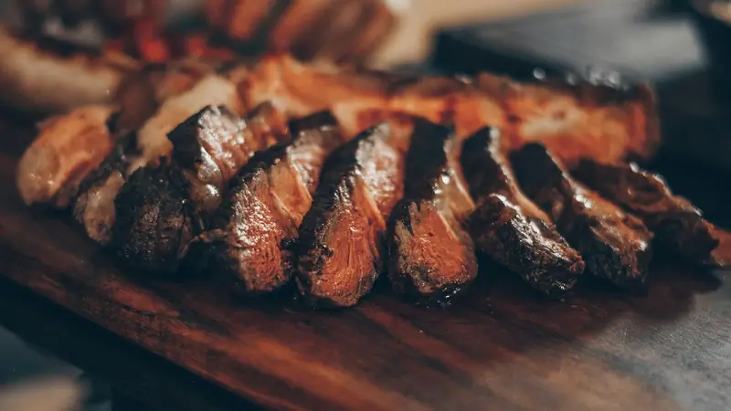
La pizarra
Nuestros cortes
Vacuno, cerdo, pollo y embutidos. Consultá precios y pedí tus cortes a medida: tocá + para sumar al pedido.
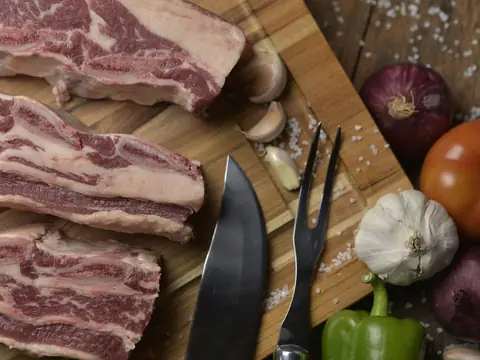
01 · VacunoAsado de Tira
El clásico del asado argentino, cortado al ancho que prefieras.
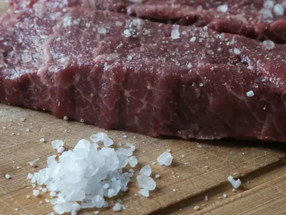
02 · VacunoVacío
Infaltable en la parrilla: crocante por fuera y jugoso por dentro.
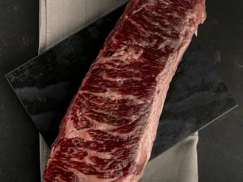
03 · VacunoEntraña
Fina y muy sabrosa, de cocción rápida.
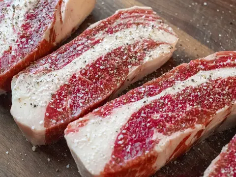
04 · VacunoBife de Chorizo
Jugoso, con su cordón de grasa. Ideal a la parrilla o a la plancha.
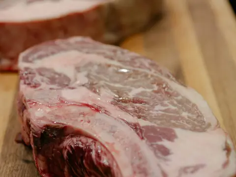
05 · VacunoOjo de Bife
Tierno y bien marmoleado, uno de los cortes más pedidos.
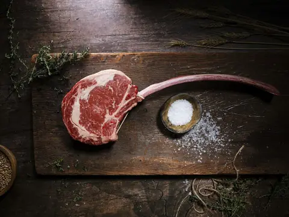
06 · VacunoTomahawk
Bife ancho con hueso largo, para ocasiones especiales.
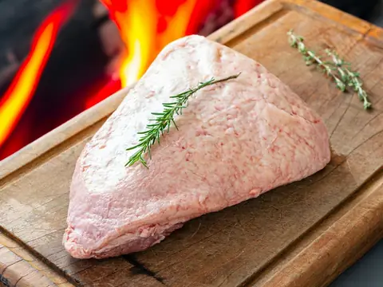
07 · VacunoPicanha
Con su capa de grasa, ideal para la parrilla.
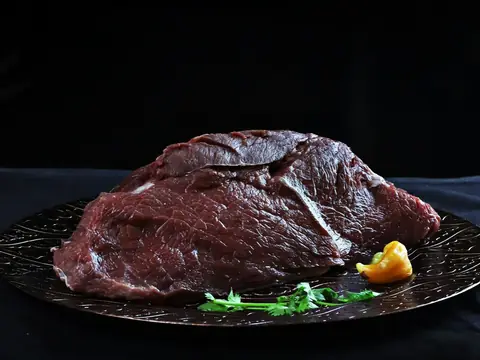
08 · VacunoColita de Cuadril
Tierna y versátil: al horno, a la parrilla o en bifes.
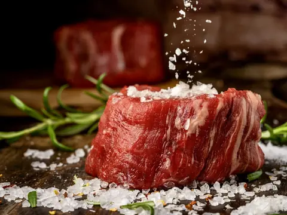
09 · VacunoLomo
El corte más tierno de la vaca.
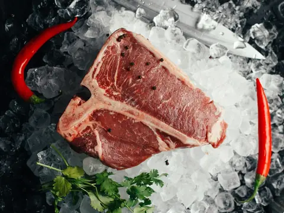
10 · VacunoT-Bone
Lomo y bife en un solo corte, ideal para la parrilla.
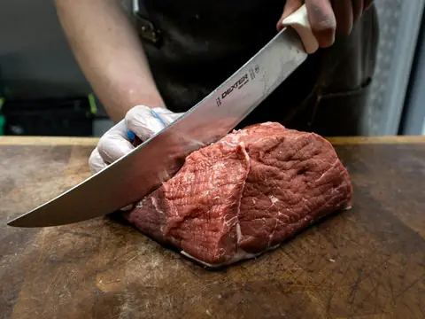
11 · VacunoNalga
Magra y tierna: milanesas, bifes o escalopes.
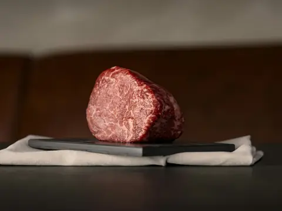
12 · VacunoPeceto
Magro y parejo, ideal para vitel toné o al horno.
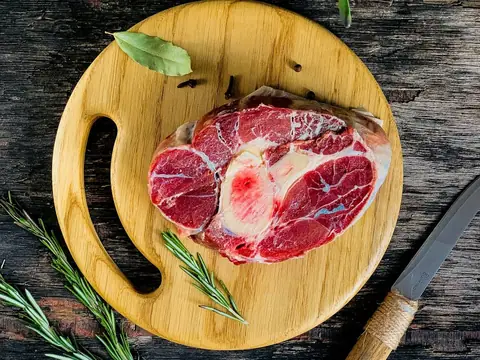
13 · VacunoOsobuco
Con hueso y médula, perfecto para guisos y cocciones lentas.
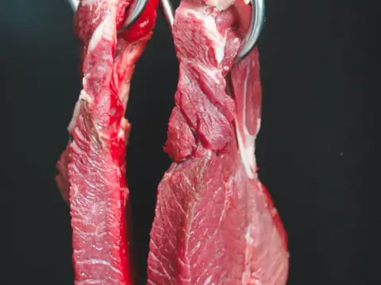
14 · VacunoMatambre
Corte fino y extendido, ideal arrollado o a la parrilla.
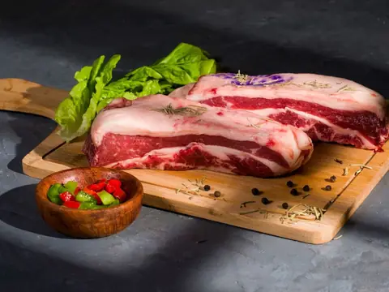
15 · VacunoFalda
Con hueso y grasa, ideal para puchero, guisos y a la parrilla.
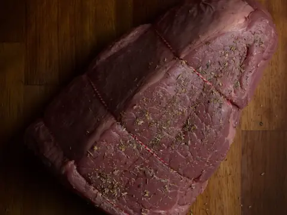
16 · VacunoBola de Lomo
Magra y tierna: milanesas, bifes o al horno.
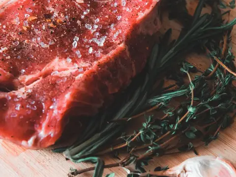
17 · VacunoCuadrada
Magra y versátil, ideal para milanesas y escalopes.
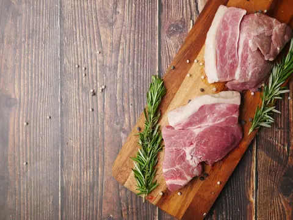
18 · CerdoBondiola
Jugosa y con buen sabor, a la parrilla, al horno o desmenuzada.
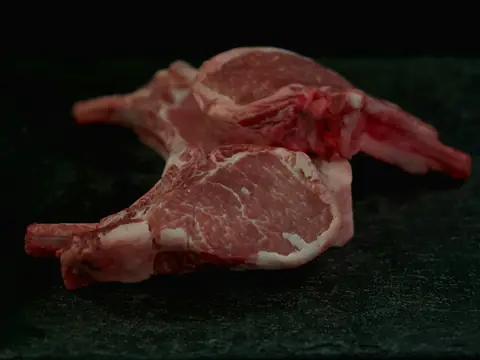
19 · CerdoCarré de Cerdo
Chuletas con hueso, tiernas y rendidoras.
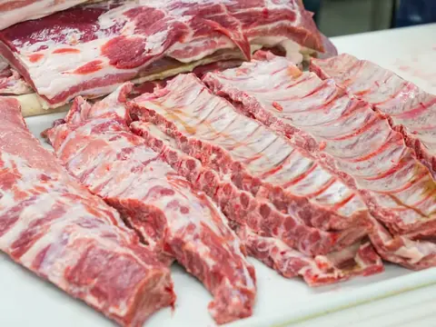
20 · CerdoPechito de Cerdo
Costillas de cerdo para la parrilla o el horno.
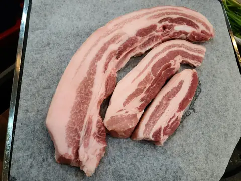
21 · CerdoPanceta
Para dorar a la parrilla o sumar sabor a tus platos.
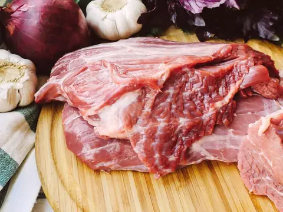
22 · CerdoMatambrito de Cerdo
Tierno y sabroso, un clásico a la parrilla.
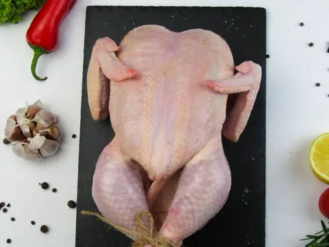
23 · PolloPollo Entero
Pollo fresco entero, listo para el horno o la parrilla.
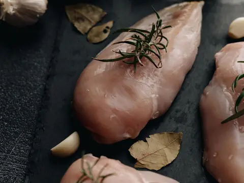
24 · PolloPechuga
Magra y versátil, entera o fileteada a pedido.
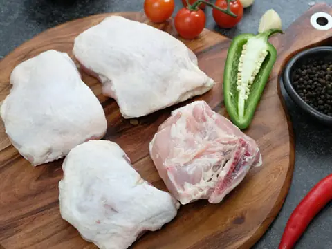
25 · PolloPata y Muslo
Jugosos y con mucho sabor, ideales al horno.
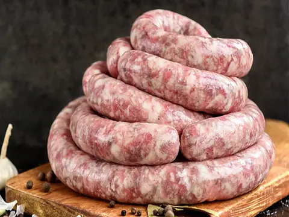
26 · EmbutidosChorizo
Infaltable para arrancar el asado.
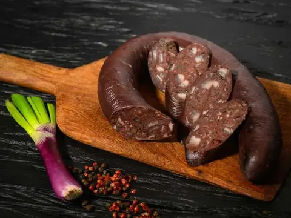
27 · EmbutidosMorcilla
Infaltable de la parrillada.
Precios según peso y disponibilidad del día — se confirman por WhatsApp.
La diferencia
Por qué elegirnos
- I
Hacienda seleccionada
Elegimos cada pieza con criterio y exigencia.
- II
Frescura en cada corte
Cuidamos la cadena de frío, de la cámara a tu mesa.
- III
Cortes a medida
Preparamos cada corte como lo necesitás.
- IV
Asesoramiento experto
Te recomendamos corte, punto y cocción.
Cómo pedir
Tu pedido, en tres pasos.
- Elegí tus cortes en la pizarra.
- Ajustá la cantidad de cada uno.
- Envialo por WhatsApp y te confirmamos precio y retiro.
Dirección
Av. Ejemplo 1234, Ciudad
placeholderHorarios
Lun a Sáb · 8 a 13 y 17 a 21 h
Dom · 8 a 13 h